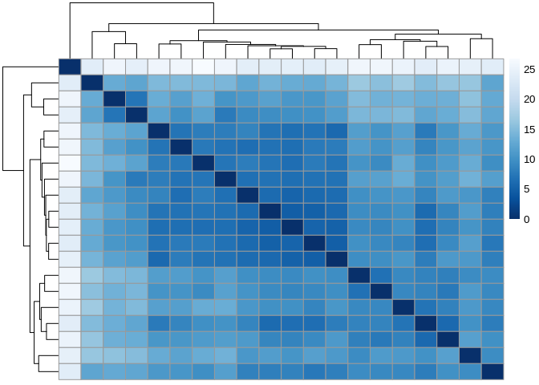
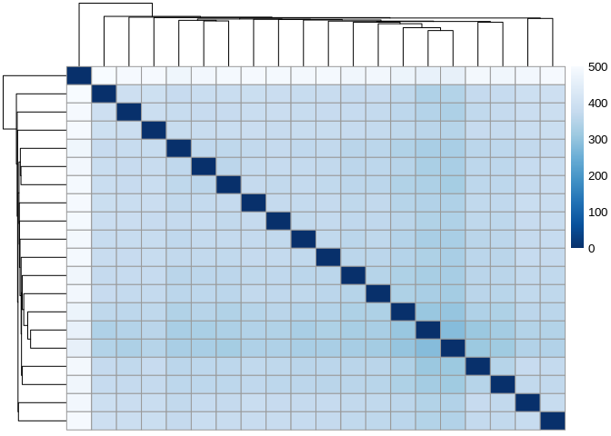
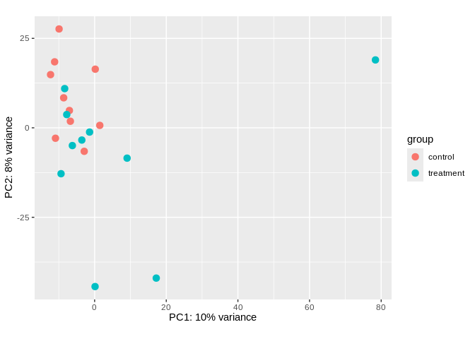
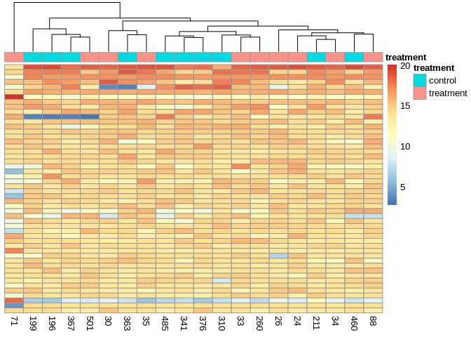

This analysis was done as part of project-clam-oa (GitHub repo).
The contents below are from markdown knitted from 03.00-D-sRNAseq-gene-expression-DESeq2.Rmd (commit 3eb5caa).
1 Background
This will run DEseq2 (Love, Huber, and Anders 2014) to determine if any of the miRNAs identified by ShortStack in 02.00-ShortStack-31bp-fastp-merged.md analysis are differentially expressed between control/treatment.
This was initially run with a log2 fold change threshold set to 1 (which is equivalent to a 2-fold change in expression), but that returned 0 differentially expressed miRNAs. As such, this was run again with the log2 fold change threshold set to 0.
ShortStack identified 37 miRNAs.
This notebook will also run DEseq2 (Love, Huber, and Anders 2014) on all sRNAs to identify any differential expression.
This includes the 37 miRNAs identified by ShortStack.
1.1 Inputs
Counts.txt: ShortStack counts matrix. Includes all clusters, including those that were not categorized as miRNAs.DESeq2-coldata.tab: Two column table with sample ID and treatment. This file is also an output from this notebook.ManilaOA2023_shortRNASeq_Meta.csv: Metadata file for this sRNA-seq data.
1.2 Outputs
DE-miRNAs.fdr-0.05.lfc-0.tab: Tab-delimited list of differentially expressed miRNA “clusters” from the ShortStackResults.txtfile.DE-sRNAs.fdr-0.05.lfc-0.tab: Tab-delimited list of differentially expressed sRNA “clusters” from the ShortStackResults.txtfile. Since this is any sRNA, results may also include miRNAs identified by ShortStack.DESeq2-coldata.tab: Two column table with sample ID and treatment. Needed as input to DEseq2.deseq2.miRNAs.fdr-0.05.lfc-0.table.csv: DEseq2 miRNA output table of results with adjusted p-value <= 0.05 and a log2 fold change value = 0.deseq2.miRNAs.table.csv: Unfiltered DEseq2 miRNA output table containing all results with mean expression, fold change in expression, and adjusted p-values for all input samples.deseq2.sRNAs.fdr-0.05.lfc-0.table.csv: DEseq2 sRNA output table of results with adjusted p-value <= 0.05 and a log2 fold change value = 0.deseq2.sRNAs.table.csv: Unfiltered DEseq2 sRNA output table containing all results with mean expression, fold change in expression, and adjusted p-values for all input samples.
2 Set R variables
# Define the output directory path
output_dir <- "../output/03.00-sRNAseq-gene-expression-DESeq2/"
# Set desired false discovery rate threshold (i.e. adjusted p-value, padj)
fdr <- 0.05
# Set log2 fold change threshold (a value of '1' is equal to a fold change of '2')
log2fc <- 03 Load count data
Load in the sRNA count matrix generated using ShortStack 4.1.1. Keep in mind this data includes counts of all sRNAs, not just miRNAs.
Counts generated in 02.00-ShortStack-31bp-fastp-merged.
3.1 Select only miRNAs IDd by ShortStack
# Read in sRNA counts data
miRNA_seq_counts_shortstack <- read_delim("../output/02.00-ShortStack-31bp-fastp-merged/ShortStack_out/Counts.txt", delim="\t")
miRNA_seq_counts_shortstack <- miRNA_seq_counts_shortstack %>% filter(MIRNA == "Y")
str(miRNA_seq_counts_shortstack)spc_tbl_ [37 × 23] (S3: spec_tbl_df/tbl_df/tbl/data.frame)
$ Coords : chr [1:37] "NW_026852415.1:231396-231495" "NW_026852524.1:285406-285505" "NW_026852815.1:56435-56532" "NW_026853363.1:213466-213568" ...
$ Name : chr [1:37] "Cluster_1785" "Cluster_2042" "Cluster_2646" "Cluster_3720" ...
$ MIRNA : chr [1:37] "Y" "Y" "Y" "Y" ...
$ 196-fastp-adapters-polyG-31bp-merged_condensed: num [1:37] 693 108457 1808 37 9 ...
$ 199-fastp-adapters-polyG-31bp-merged_condensed: num [1:37] 503 137906 1592 24 4 ...
$ 211-fastp-adapters-polyG-31bp-merged_condensed: num [1:37] 663 154248 2026 23 2 ...
$ 24-fastp-adapters-polyG-31bp-merged_condensed : num [1:37] 557 136805 1276 34 8 ...
$ 260-fastp-adapters-polyG-31bp-merged_condensed: num [1:37] 1419 120261 1468 178 8 ...
$ 26-fastp-adapters-polyG-31bp-merged_condensed : num [1:37] 559 124995 1580 29 0 ...
$ 30-fastp-adapters-polyG-31bp-merged_condensed : num [1:37] 780 157279 2265 19 4 ...
$ 310-fastp-adapters-polyG-31bp-merged_condensed: num [1:37] 569 154690 1765 15 2 ...
$ 33-fastp-adapters-polyG-31bp-merged_condensed : num [1:37] 442 116913 1420 13 9 ...
$ 341-fastp-adapters-polyG-31bp-merged_condensed: num [1:37] 728 121161 1344 7 2 ...
$ 34-fastp-adapters-polyG-31bp-merged_condensed : num [1:37] 665 143730 1736 14 5 ...
$ 35-fastp-adapters-polyG-31bp-merged_condensed : num [1:37] 607 128534 1683 26 1 ...
$ 363-fastp-adapters-polyG-31bp-merged_condensed: num [1:37] 538 95266 1408 15 6 ...
$ 367-fastp-adapters-polyG-31bp-merged_condensed: num [1:37] 520 119389 1315 7 1 ...
$ 376-fastp-adapters-polyG-31bp-merged_condensed: num [1:37] 1029 217736 2833 14 2 ...
$ 460-fastp-adapters-polyG-31bp-merged_condensed: num [1:37] 571 139439 1466 9 6 ...
$ 485-fastp-adapters-polyG-31bp-merged_condensed: num [1:37] 579 154776 1747 11 4 ...
$ 501-fastp-adapters-polyG-31bp-merged_condensed: num [1:37] 1182 167181 2135 174 3 ...
$ 71-fastp-adapters-polyG-31bp-merged_condensed : num [1:37] 392 1097 11123 1248 5 ...
$ 88-fastp-adapters-polyG-31bp-merged_condensed : num [1:37] 552 136133 1808 9 1 ...
- attr(*, "spec")=
.. cols(
.. Coords = col_character(),
.. Name = col_character(),
.. MIRNA = col_character(),
.. `196-fastp-adapters-polyG-31bp-merged_condensed` = col_double(),
.. `199-fastp-adapters-polyG-31bp-merged_condensed` = col_double(),
.. `211-fastp-adapters-polyG-31bp-merged_condensed` = col_double(),
.. `24-fastp-adapters-polyG-31bp-merged_condensed` = col_double(),
.. `260-fastp-adapters-polyG-31bp-merged_condensed` = col_double(),
.. `26-fastp-adapters-polyG-31bp-merged_condensed` = col_double(),
.. `30-fastp-adapters-polyG-31bp-merged_condensed` = col_double(),
.. `310-fastp-adapters-polyG-31bp-merged_condensed` = col_double(),
.. `33-fastp-adapters-polyG-31bp-merged_condensed` = col_double(),
.. `341-fastp-adapters-polyG-31bp-merged_condensed` = col_double(),
.. `34-fastp-adapters-polyG-31bp-merged_condensed` = col_double(),
.. `35-fastp-adapters-polyG-31bp-merged_condensed` = col_double(),
.. `363-fastp-adapters-polyG-31bp-merged_condensed` = col_double(),
.. `367-fastp-adapters-polyG-31bp-merged_condensed` = col_double(),
.. `376-fastp-adapters-polyG-31bp-merged_condensed` = col_double(),
.. `460-fastp-adapters-polyG-31bp-merged_condensed` = col_double(),
.. `485-fastp-adapters-polyG-31bp-merged_condensed` = col_double(),
.. `501-fastp-adapters-polyG-31bp-merged_condensed` = col_double(),
.. `71-fastp-adapters-polyG-31bp-merged_condensed` = col_double(),
.. `88-fastp-adapters-polyG-31bp-merged_condensed` = col_double()
.. )
- attr(*, "problems")=<externalptr> 3.2 All sRNA-seq counts
# Read in sRNA counts data
srna_seq_counts_all <- read_delim("../output/02.00-ShortStack-31bp-fastp-merged/ShortStack_out/Counts.txt", delim="\t")
str(srna_seq_counts_all)spc_tbl_ [33,666 × 23] (S3: spec_tbl_df/tbl_df/tbl/data.frame)
$ Coords : chr [1:33666] "NW_026851514.1:11444-11873" "NW_026851514.1:12401-12830" "NW_026851515.1:76365-77030" "NW_026851515.1:77089-77506" ...
$ Name : chr [1:33666] "Cluster_1" "Cluster_2" "Cluster_3" "Cluster_4" ...
$ MIRNA : chr [1:33666] "N" "N" "N" "N" ...
$ 196-fastp-adapters-polyG-31bp-merged_condensed: num [1:33666] 39 33 179 34 279 68 28 233 40 0 ...
$ 199-fastp-adapters-polyG-31bp-merged_condensed: num [1:33666] 14 24 7 0 12 2 0 11 1 1 ...
$ 211-fastp-adapters-polyG-31bp-merged_condensed: num [1:33666] 214 40 979 31 401 35 106 492 56 0 ...
$ 24-fastp-adapters-polyG-31bp-merged_condensed : num [1:33666] 102 35 311 10 111 16 43 74 15 0 ...
$ 260-fastp-adapters-polyG-31bp-merged_condensed: num [1:33666] 39 21 132 1 123 21 5 124 23 2 ...
$ 26-fastp-adapters-polyG-31bp-merged_condensed : num [1:33666] 0 0 808 87 388 20 8 827 215 0 ...
$ 30-fastp-adapters-polyG-31bp-merged_condensed : num [1:33666] 12 7 448 21 165 26 39 117 38 3 ...
$ 310-fastp-adapters-polyG-31bp-merged_condensed: num [1:33666] 43 13 857 25 153 0 5 165 3 2 ...
$ 33-fastp-adapters-polyG-31bp-merged_condensed : num [1:33666] 1 1 320 26 225 24 35 177 97 3 ...
$ 341-fastp-adapters-polyG-31bp-merged_condensed: num [1:33666] 220 41 671 7 110 19 4 92 32 0 ...
$ 34-fastp-adapters-polyG-31bp-merged_condensed : num [1:33666] 34 32 1413 28 795 ...
$ 35-fastp-adapters-polyG-31bp-merged_condensed : num [1:33666] 103 40 497 24 126 57 37 116 29 3 ...
$ 363-fastp-adapters-polyG-31bp-merged_condensed: num [1:33666] 60 16 833 117 441 89 45 827 200 0 ...
$ 367-fastp-adapters-polyG-31bp-merged_condensed: num [1:33666] 40 132 426 6 127 23 19 122 127 0 ...
$ 376-fastp-adapters-polyG-31bp-merged_condensed: num [1:33666] 0 16 2409 187 978 ...
$ 460-fastp-adapters-polyG-31bp-merged_condensed: num [1:33666] 3 0 331 17 149 40 41 260 28 2 ...
$ 485-fastp-adapters-polyG-31bp-merged_condensed: num [1:33666] 5 42 5 0 42 4 4 106 2 0 ...
$ 501-fastp-adapters-polyG-31bp-merged_condensed: num [1:33666] 4 1 363 6 76 ...
$ 71-fastp-adapters-polyG-31bp-merged_condensed : num [1:33666] 0 0 31 123 671 37 2 691 135 0 ...
$ 88-fastp-adapters-polyG-31bp-merged_condensed : num [1:33666] 1 41 633 48 354 45 52 200 77 0 ...
- attr(*, "spec")=
.. cols(
.. Coords = col_character(),
.. Name = col_character(),
.. MIRNA = col_character(),
.. `196-fastp-adapters-polyG-31bp-merged_condensed` = col_double(),
.. `199-fastp-adapters-polyG-31bp-merged_condensed` = col_double(),
.. `211-fastp-adapters-polyG-31bp-merged_condensed` = col_double(),
.. `24-fastp-adapters-polyG-31bp-merged_condensed` = col_double(),
.. `260-fastp-adapters-polyG-31bp-merged_condensed` = col_double(),
.. `26-fastp-adapters-polyG-31bp-merged_condensed` = col_double(),
.. `30-fastp-adapters-polyG-31bp-merged_condensed` = col_double(),
.. `310-fastp-adapters-polyG-31bp-merged_condensed` = col_double(),
.. `33-fastp-adapters-polyG-31bp-merged_condensed` = col_double(),
.. `341-fastp-adapters-polyG-31bp-merged_condensed` = col_double(),
.. `34-fastp-adapters-polyG-31bp-merged_condensed` = col_double(),
.. `35-fastp-adapters-polyG-31bp-merged_condensed` = col_double(),
.. `363-fastp-adapters-polyG-31bp-merged_condensed` = col_double(),
.. `367-fastp-adapters-polyG-31bp-merged_condensed` = col_double(),
.. `376-fastp-adapters-polyG-31bp-merged_condensed` = col_double(),
.. `460-fastp-adapters-polyG-31bp-merged_condensed` = col_double(),
.. `485-fastp-adapters-polyG-31bp-merged_condensed` = col_double(),
.. `501-fastp-adapters-polyG-31bp-merged_condensed` = col_double(),
.. `71-fastp-adapters-polyG-31bp-merged_condensed` = col_double(),
.. `88-fastp-adapters-polyG-31bp-merged_condensed` = col_double()
.. )
- attr(*, "problems")=<externalptr> 4 Create DESeq2 Column Data
4.1 Read in metadata CSV
# Load metadata
metadata <- read.csv("../data/ManilaOA2023_shortRNASeq_Meta.csv", header = TRUE)
str(metadata)'data.frame': 20 obs. of 6 variables:
$ ID_simple : int 196 199 211 310 341 363 367 376 460 485 ...
$ treatment : chr "control" "control" "control" "control" ...
$ Sex : logi FALSE FALSE FALSE FALSE FALSE FALSE ...
$ MeanEggArea: int NA 3687 3519 3795 3837 3749 NA 3834 3759 NA ...
$ Species : chr "Manila clam" "Manila clam" "Manila clam" "Manila clam" ...
$ LifeStage : chr "Adult" "Adult" "Adult" "Adult" ...4.2 Extract sample names
sample_names <- colnames(miRNA_seq_counts_shortstack) %>%
str_subset("^\\d+-") %>%
str_extract("^\\d+")
str(sample_names) chr [1:20] "196" "199" "211" "24" "260" "26" "30" "310" "33" "341" "34" ...4.3 Select sample name and treatment
sample_treatment_df <- metadata %>%
select(ID_simple, treatment)
# Set sample names as rownames
rownames(sample_treatment_df) <- sample_treatment_df$ID_simple
sample_treatment_df$ID_simple <- NULL
str(sample_treatment_df)'data.frame': 20 obs. of 1 variable:
$ treatment: chr "control" "control" "control" "control" ...4.4 Write DEseq coldata to file
write.table(
sample_treatment_df,
file = "../output/03.00-sRNAseq-gene-expression-DESeq2/DESeq2-coldata.tab",
sep = "\t",
quote = FALSE,
col.names = NA
)5 SHORTSTACK miRNAS
5.1 Count data munging
5.1.1 Fix col names and convert to matrix
coldata <- sample_treatment_df
# Remove excess portions of sample column names to just "sample###"
colnames(miRNA_seq_counts_shortstack) <- sub("-fastp-adapters-polyG-31bp-merged_condensed", "", colnames(miRNA_seq_counts_shortstack))
# Keep just the counts and cluster names as matrix
miRNA_seq_counts_matrix <- as.matrix(miRNA_seq_counts_shortstack %>% select(-Coords, -MIRNA) %>% column_to_rownames(var = "Name"))
str(miRNA_seq_counts_matrix) num [1:37, 1:20] 693 108457 1808 37 9 ...
- attr(*, "dimnames")=List of 2
..$ : chr [1:37] "Cluster_1785" "Cluster_2042" "Cluster_2646" "Cluster_3720" ...
..$ : chr [1:20] "196" "199" "211" "24" ...5.1.2 Take only samples present in coldata
miRNA_common_cols <- intersect(colnames(miRNA_seq_counts_matrix),
rownames(sample_treatment_df))
miRNA_seq_counts_matrix <- miRNA_seq_counts_matrix[, miRNA_common_cols]
str(miRNA_seq_counts_matrix) num [1:37, 1:20] 693 108457 1808 37 9 ...
- attr(*, "dimnames")=List of 2
..$ : chr [1:37] "Cluster_1785" "Cluster_2042" "Cluster_2646" "Cluster_3720" ...
..$ : chr [1:20] "196" "199" "211" "24" ...5.1.3 Reorder matrix cols to match coldata
miRNA_ord <- match(rownames(sample_treatment_df), colnames(miRNA_seq_counts_matrix))
miRNA_seq_counts_matrix_sorted <- miRNA_seq_counts_matrix[, miRNA_ord]
str(miRNA_seq_counts_matrix_sorted) num [1:37, 1:20] 693 108457 1808 37 9 ...
- attr(*, "dimnames")=List of 2
..$ : chr [1:37] "Cluster_1785" "Cluster_2042" "Cluster_2646" "Cluster_3720" ...
..$ : chr [1:20] "196" "199" "211" "310" ...5.1.4 Verify rownames match
all(rownames(coldata) == colnames(miRNA_seq_counts_matrix_sorted))[1] TRUE5.2 Create DESeq2 data set
5.2.1 Initialize DEseq2 data set
miRNA_dds <- DESeqDataSetFromMatrix(countData = miRNA_seq_counts_matrix_sorted,
colData = coldata,
design = ~ treatment)
miRNA_ddsclass: DESeqDataSet
dim: 37 20
metadata(1): version
assays(1): counts
rownames(37): Cluster_1785 Cluster_2042 ... Cluster_32918 Cluster_32919
rowData names(0):
colnames(20): 196 199 ... 71 260
colData names(1): treatment5.2.2 Add cluster column as “gene” feature
miRNA_featureData <- data.frame(gene=rownames(miRNA_seq_counts_matrix_sorted))
mcols(miRNA_dds) <- DataFrame(mcols(miRNA_dds), miRNA_featureData)
mcols(miRNA_dds)DataFrame with 37 rows and 1 column
gene
<character>
Cluster_1785 Cluster_1785
Cluster_2042 Cluster_2042
Cluster_2646 Cluster_2646
Cluster_3720 Cluster_3720
Cluster_4396 Cluster_4396
... ...
Cluster_29018 Cluster_29018
Cluster_31844 Cluster_31844
Cluster_32917 Cluster_32917
Cluster_32918 Cluster_32918
Cluster_32919 Cluster_329195.2.3 Set factor levels
miRNA_dds$treatment <- factor(miRNA_dds$treatment, levels = c("control", "treatment"))5.3 DESeq analysis
5.3.1 DEseq
miRNA_dds <- DESeq(miRNA_dds)5.3.2 DEseq Results
miRNA_res <- results(miRNA_dds, alpha = fdr, lfcThreshold = log2fc)
miRNA_reslog2 fold change (MLE): treatment treatment vs control
Wald test p-value: treatment treatment vs control
DataFrame with 37 rows and 6 columns
baseMean log2FoldChange lfcSE stat pvalue
<numeric> <numeric> <numeric> <numeric> <numeric>
Cluster_1785 6.63895e+02 0.0149611 0.2810643 0.0532301 0.957548604
Cluster_2042 1.35312e+05 -0.1901409 0.4840889 -0.3927810 0.694481249
Cluster_2646 1.76900e+03 0.0185890 0.0902545 0.2059620 0.836820596
Cluster_3720 4.26842e+01 2.0921221 0.5504186 3.8009659 0.000144133
Cluster_4396 4.09498e+00 0.0360325 0.5609930 0.0642299 0.948787181
... ... ... ... ... ...
Cluster_29018 1661.6392 2.4245029 0.683762 3.545830 0.000391378
Cluster_31844 1372.1080 -0.0477386 0.146375 -0.326140 0.744318793
Cluster_32917 14.7573 0.2194667 0.377211 0.581814 0.560691835
Cluster_32918 1259.4586 0.5004769 0.370048 1.352466 0.176226232
Cluster_32919 4.5894 0.2954022 0.619287 0.477004 0.633359369
padj
<numeric>
Cluster_1785 0.98414718
Cluster_2042 0.94314745
Cluster_2646 0.96982079
Cluster_3720 0.00482699
Cluster_4396 0.98414718
... ...
Cluster_29018 0.00482699
Cluster_31844 0.94964812
Cluster_32917 0.94314745
Cluster_32918 0.57114000
Cluster_32919 0.94314745summary(miRNA_res)out of 37 with nonzero total read count
adjusted p-value < 0.05
LFC > 0 (up) : 3, 8.1%
LFC < 0 (down) : 1, 2.7%
outliers [1] : 0, 0%
low counts [2] : 0, 0%
(mean count < 4)
[1] see 'cooksCutoff' argument of ?results
[2] see 'independentFiltering' argument of ?resultstable(miRNA_res$padj < fdr)FALSE TRUE
33 4 5.3.3 Write DDS results tables to CSVs
write.csv(miRNA_res, file = paste0(output_dir, "deseq2", ".miRNAs", ".table.csv"), row.names = TRUE, quote = FALSE)
# Subset based on adjusted p-value
miRNA_resSig <- subset(miRNA_res, padj < fdr)
miRNA_resSiglog2 fold change (MLE): treatment treatment vs control
Wald test p-value: treatment treatment vs control
DataFrame with 4 rows and 6 columns
baseMean log2FoldChange lfcSE stat pvalue
<numeric> <numeric> <numeric> <numeric> <numeric>
Cluster_3720 42.68419 2.09212 0.550419 3.80097 0.000144133
Cluster_15325 27.20988 4.27878 1.188934 3.59883 0.000319647
Cluster_17619 7.68082 -2.71853 0.785237 -3.46205 0.000536073
Cluster_29018 1661.63918 2.42450 0.683762 3.54583 0.000391378
padj
<numeric>
Cluster_3720 0.00482699
Cluster_15325 0.00482699
Cluster_17619 0.00495868
Cluster_29018 0.00482699write.csv(miRNA_resSig, file = paste0(output_dir, "deseq2", ".miRNAs", ".fdr-", fdr, ".lfc-", log2fc, ".table.csv"), row.names = TRUE, quote = FALSE)5.3.4 Identify Differentially Expressed miRNAs
# Extract the first column values (excluding the header)
clusters=$(cut -d',' -f1 "../output/03.00-sRNAseq-gene-expression-DESeq2/deseq2.miRNAs.fdr-0.05.lfc-0.table.csv" | tail -n +2)
# Loop through each cluster and search in the Results.txt file
for cluster in $clusters;
do
grep "$cluster" "../output/02.00-ShortStack-31bp-fastp-merged/ShortStack_out/Results.txt"
done \
| tee ../output/03.00-sRNAseq-gene-expression-DESeq2/DE-miRNAs.fdr-0.05.lfc-0.tab
echo ""
echo "--------------------------------------------------------------"
echo ""
for cluster in $clusters;
do
grep "$cluster" "../output/02.00-ShortStack-31bp-fastp-merged/ShortStack_out/Results.txt" \
| awk '{print $21}'
doneNW_026853363.1:213466-213568 Cluster_3720 NW_026853363.1 213466 213568 103 1906 84 1.0 + AGAUAUGUUUGAUAUAUUUGGU 864 9 11 129 1048 458 251 22 Y cte-miR-190;mle-miR-190-5p
NW_026858897.1:43133-43248 Cluster_15325 NW_026858897.1 43133 43248 116 1294 54 0.98 + UGUUCUACGAGCUGUAGCUGU 685 4 34 796 431 29 0 21 Y NA
NW_026859924.1:190953-191067 Cluster_17619 NW_026859924.1 190953 191067 115 852 54 0.012 - UGUUCUACGAGCUGUAACUGUC 509 4 70 175 593 10 0 22 Y NA
NW_026865271.1:194028-194125 Cluster_29018 NW_026865271.1 194028 194125 98 66793 264 1.0 + UCACAACCUGCUUGAAUGAGGAC 31912 323 43 462 5039 38213 22713 23 Y mle-miR-67-3p
--------------------------------------------------------------
cte-miR-190;mle-miR-190-5p
NA
NA
mle-miR-67-3p5.4 Variance stabilizing transformations (VST)
- Here we transform counts using a variance stabilizing transformation (VST), since we have many samples.
miRNA_vsd <- varianceStabilizingTransformation(miRNA_dds, blind=FALSE)5.5 Plotting
5.5.1 Sample distances
miRNA_sampleDists <- dist(t(assay(miRNA_vsd)))
miRNA_sampleDistMatrix <- as.matrix( miRNA_sampleDists )
rownames(miRNA_sampleDistMatrix) <- paste( miRNA_vsd$colony.id, miRNA_vsd$time.point, sep = " - " )
colnames(miRNA_sampleDistMatrix) <- NULL
colors <- colorRampPalette( rev(brewer.pal(9, "Blues")) )(255)
pheatmap(miRNA_sampleDistMatrix,
clustering_distance_rows = miRNA_sampleDists,
clustering_distance_cols = miRNA_sampleDists,
col = colors)
5.5.2 PCA
Visualize sample clustering via PCA (after transformation)
# PCA with points color coded by time point
plotPCA(miRNA_vsd, intgroup = c("treatment"))5.5.3 Heatmap of 37 ShortStack miRNAs
miRNA_counts <- order(rowMeans(counts(miRNA_dds,normalized=TRUE)),
decreasing=TRUE)[1:37]
annotation = colData(miRNA_dds) %>% as.data.frame() %>% select(treatment)
pheatmap(assay(miRNA_vsd)[miRNA_counts,],
cluster_rows=FALSE,
show_rownames=TRUE,
cluster_cols=TRUE,
annotation_col = annotation)6 ALL sRNA
6.1 Count data munging
6.1.1 Fix col names and convert to matrix
coldata <- sample_treatment_df
# Remove excess portions of sample column names to just "sample###"
colnames(srna_seq_counts_all) <- sub("-fastp-adapters-polyG-31bp-merged_condensed", "", colnames(srna_seq_counts_all))
# Keep just the counts and cluster names as matrix
srna_seq_counts_matrix <- as.matrix(srna_seq_counts_all %>% select(-Coords, -MIRNA) %>% column_to_rownames(var = "Name"))
str(srna_seq_counts_matrix) num [1:33666, 1:20] 39 33 179 34 279 68 28 233 40 0 ...
- attr(*, "dimnames")=List of 2
..$ : chr [1:33666] "Cluster_1" "Cluster_2" "Cluster_3" "Cluster_4" ...
..$ : chr [1:20] "196" "199" "211" "24" ...6.1.2 Take only samples present in coldata
sRNA_common_cols <- intersect(colnames(srna_seq_counts_matrix),
rownames(sample_treatment_df))
srna_seq_counts_matrix <- srna_seq_counts_matrix[, sRNA_common_cols]
str(srna_seq_counts_matrix) num [1:33666, 1:20] 39 33 179 34 279 68 28 233 40 0 ...
- attr(*, "dimnames")=List of 2
..$ : chr [1:33666] "Cluster_1" "Cluster_2" "Cluster_3" "Cluster_4" ...
..$ : chr [1:20] "196" "199" "211" "24" ...6.1.3 Reorder matrix cols to match coldata
sRNA_ord <- match(rownames(sample_treatment_df), colnames(srna_seq_counts_matrix))
srna_seq_counts_matrix_sorted <- srna_seq_counts_matrix[, sRNA_ord]
str(srna_seq_counts_matrix_sorted) num [1:33666, 1:20] 39 33 179 34 279 68 28 233 40 0 ...
- attr(*, "dimnames")=List of 2
..$ : chr [1:33666] "Cluster_1" "Cluster_2" "Cluster_3" "Cluster_4" ...
..$ : chr [1:20] "196" "199" "211" "310" ...6.1.4 Verify rownames match
all(rownames(coldata) == colnames(srna_seq_counts_matrix_sorted))[1] TRUE6.2 Create DESeq2 data set
6.2.1 Initialize DEseq2 data set
sRNA_dds <- DESeqDataSetFromMatrix(countData = srna_seq_counts_matrix_sorted,
colData = coldata,
design = ~ treatment)
sRNA_ddsclass: DESeqDataSet
dim: 33666 20
metadata(1): version
assays(1): counts
rownames(33666): Cluster_1 Cluster_2 ... Cluster_33665 Cluster_33666
rowData names(0):
colnames(20): 196 199 ... 71 260
colData names(1): treatment6.2.2 Add cluster column as “gene” feature
sRNA_featureData <- data.frame(gene=rownames(srna_seq_counts_matrix_sorted))
mcols(sRNA_dds) <- DataFrame(mcols(sRNA_dds), sRNA_featureData)
mcols(sRNA_dds)DataFrame with 33666 rows and 1 column
gene
<character>
Cluster_1 Cluster_1
Cluster_2 Cluster_2
Cluster_3 Cluster_3
Cluster_4 Cluster_4
Cluster_5 Cluster_5
... ...
Cluster_33662 Cluster_33662
Cluster_33663 Cluster_33663
Cluster_33664 Cluster_33664
Cluster_33665 Cluster_33665
Cluster_33666 Cluster_336666.2.3 Set factor levels
sRNA_dds$treatment <- factor(sRNA_dds$treatment, levels = c("control", "treatment"))6.3 DESeq analysis
6.3.1 DEseq
sRNA_dds <- DESeq(sRNA_dds)6.3.2 DEseq Results
sRNA_res <- results(sRNA_dds, alpha = fdr, lfcThreshold = log2fc)
sRNA_reslog2 fold change (MLE): treatment treatment vs control
Wald test p-value: treatment treatment vs control
DataFrame with 33666 rows and 6 columns
baseMean log2FoldChange lfcSE stat pvalue padj
<numeric> <numeric> <numeric> <numeric> <numeric> <numeric>
Cluster_1 45.5523 -1.029009 1.046267 -0.983505 0.325359 0.766886
Cluster_2 25.3913 -0.974521 0.887134 -1.098505 0.271984 0.722394
Cluster_3 500.2432 -0.223463 0.681362 -0.327966 0.742938 0.949341
Cluster_4 37.4950 0.372492 0.875715 0.425357 0.670576 0.929611
Cluster_5 262.8973 0.528197 0.582344 0.907018 0.364397 0.791723
... ... ... ... ... ... ...
Cluster_33662 73.5380 -1.0047441 0.551679 -1.821247 0.0685693 0.422218
Cluster_33663 102.4384 -0.8580087 0.593642 -1.445329 0.1483654 0.582914
Cluster_33664 165.7171 -0.5549368 0.511572 -1.084768 0.2780242 0.728123
Cluster_33665 57.5813 -0.0529832 0.505219 -0.104872 0.9164777 0.984630
Cluster_33666 2721.9794 -0.7353095 0.548616 -1.340298 0.1801484 0.629508summary(sRNA_res)out of 33654 with nonzero total read count
adjusted p-value < 0.05
LFC > 0 (up) : 335, 1%
LFC < 0 (down) : 373, 1.1%
outliers [1] : 0, 0%
low counts [2] : 665, 2%
(mean count < 2)
[1] see 'cooksCutoff' argument of ?results
[2] see 'independentFiltering' argument of ?resultstable(sRNA_res$padj < fdr)FALSE TRUE
32293 708 6.3.3 Write DDS results tables to CSVs
write.csv(sRNA_res, file = paste0(output_dir, "deseq2", ".sRNAs", ".table.csv"), row.names = TRUE, quote = FALSE)
# Subset based on adjusted p-value
sRNA_resSig <- subset(sRNA_res, padj < fdr)
sRNA_resSiglog2 fold change (MLE): treatment treatment vs control
Wald test p-value: treatment treatment vs control
DataFrame with 708 rows and 6 columns
baseMean log2FoldChange lfcSE stat pvalue
<numeric> <numeric> <numeric> <numeric> <numeric>
Cluster_62 282.1243 -2.31979 0.705223 -3.28945 1.00384e-03
Cluster_90 55.2729 3.23430 0.952673 3.39498 6.86343e-04
Cluster_137 48.2576 -3.45184 0.869587 -3.96951 7.20196e-05
Cluster_139 47.1693 -3.56747 0.880422 -4.05200 5.07822e-05
Cluster_140 585.7301 -4.30156 0.957128 -4.49424 6.98204e-06
... ... ... ... ... ...
Cluster_33492 83.31701 3.46496 0.799002 4.33661 1.44695e-05
Cluster_33496 9.73899 -4.88615 1.469261 -3.32559 8.82330e-04
Cluster_33503 633.79425 -6.14324 0.916828 -6.70053 2.07658e-11
Cluster_33524 6.02438 6.14925 1.874132 3.28112 1.03396e-03
Cluster_33579 1000.14999 -3.54729 0.648113 -5.47326 4.41842e-08
padj
<numeric>
Cluster_62 0.04807906
Cluster_90 0.03822268
Cluster_137 0.01014849
Cluster_139 0.00833762
Cluster_140 0.00225896
... ...
Cluster_33492 3.68202e-03
Cluster_33496 4.44546e-02
Cluster_33503 1.71323e-07
Cluster_33524 4.86066e-02
Cluster_33579 5.08059e-05write.csv(sRNA_resSig, file = paste0(output_dir, "deseq2", ".sRNAs", ".fdr-", fdr, ".lfc-", log2fc, ".table.csv"), row.names = TRUE, quote = FALSE)6.3.4 Identify Differentially Expressed sRNAs
# Extract the first column values (excluding the header)
clusters=$(cut -d',' -f1 "../output/03.00-sRNAseq-gene-expression-DESeq2/deseq2.sRNAs.fdr-0.05.lfc-0.table.csv" | tail -n +2)
# Loop through each cluster and search in the Results.txt file
for cluster in $clusters;
do
grep "$cluster" "../output/02.00-ShortStack-31bp-fastp-merged/ShortStack_out/Results.txt"
done > ../output/03.00-sRNAseq-gene-expression-DESeq2/DE-sRNAs.fdr-0.05.lfc-0.tab6.4 Variance stabilizing transformations (VST)
- Here we transform counts using a variance stabilizing transformation (VST), since we have many samples.
sRNA_vsd <- varianceStabilizingTransformation(sRNA_dds, blind=FALSE)6.5 Plotting
6.5.1 Sample distances
sRNA_sampleDists <- dist(t(assay(sRNA_vsd)))
sRNA_sampleDistMatrix <- as.matrix( sRNA_sampleDists )
rownames(sRNA_sampleDistMatrix) <- paste( sRNA_vsd$colony.id, sRNA_vsd$time.point, sep = " - " )
colnames(sRNA_sampleDistMatrix) <- NULL
colors <- colorRampPalette( rev(brewer.pal(9, "Blues")) )(255)
pheatmap(sRNA_sampleDistMatrix,
clustering_distance_rows = sRNA_sampleDists,
clustering_distance_cols = sRNA_sampleDists,
col = colors)
6.5.2 PCA
Visualize sample clustering via PCA (after transformation)
# PCA with points color coded by time point
plotPCA(sRNA_vsd, intgroup = c("treatment"))
6.5.3 Heatmap of Top 50 sRNAs
sRNA_counts_top50 <- order(rowMeans(counts(sRNA_dds,normalized=TRUE)),
decreasing=TRUE)[1:50]
annotation = colData(sRNA_dds) %>% as.data.frame() %>% select(treatment)
pheatmap(assay(sRNA_vsd)[sRNA_counts_top50,],
cluster_rows=FALSE,
show_rownames=FALSE,
cluster_cols=TRUE,
annotation_col = annotation)